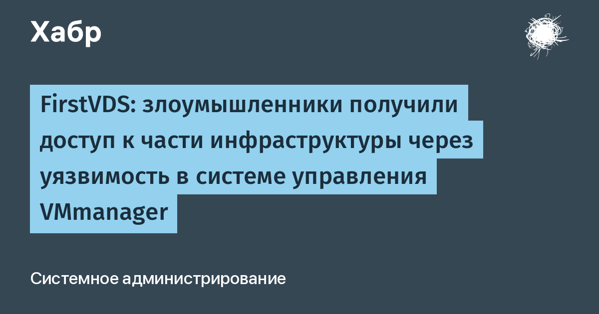

17 октября 2026 года хостинг-провайдер FirstVDS официально сообщил: злоумышленники проникли в часть его инфраструктуры через уязвимость в VMmanager 6 — системе управления виртуализацией, которую делает ISPsystem, входящая в «Группу Астра». Это один из самых популярных продуктов такого рода в России и СНГ: панель управляет десятками тысяч виртуальных машин у сотен хостингов.
Второй сигнал заметили позже: провайдер ForestsNet Cloud сообщил, что первые следы заражения панелей VMmanager 6 относятся ещё к 11–16 октября — то есть атака шла до первого публичного предупреждения.
Злоумышленники запустили на части узлов виртуализации программу-стилер. Хитрость в том, что она не проникала внутрь виртуальных машин, а подключала диски клиентских VPS со стороны хоста в режиме «только чтение» и копировала:
Собранное уходило на сервер атакующих. Внутри самих серверов следов не осталось — машины продолжали работать как ни в чём не бывало. Классическая схема «видимого нулевого взлома»: клиент не заметит ничего, пока не опустеет кошелёк.
Речь о полностью российском инциденте: вендор — «Группа Астра» (ключевой разработчик отечественного инфраструктурного ПО, с сертификатами ФСТЭК и биржевым листингом). Под угрозой данные банков, больниц, госструктур, университетов и хостинг-провайдеров; казахстанские регуляторы уже предупреждают местных владельцев VPS. Реакция рынка — акции «Группы Астра» упали на новости о взломе (РБК).
Сам вендор публично молчит: в официальном changelog VMmanager октябрьских записей об исправлении уязвимости нет —промежуточные патчи приходят клиентам по служебным каналам, полного фикса пока нет. Поэтому FirstVDS держит внешний доступ к панели закрытым и просит хостеров не торопиться.
1. Крипта в первую очередь: перевести средства на кошельки, созданные на чистом устройстве.
2. Сменить все пароли, SSH-/API-ключи и токены; старые ключи отозвать, а не просто добавить новые.
3. Проверить журналы входов с 17 октября: `~/.ssh/authorized_keys`, новых пользователей, cron и systemd-службы.
4. Если на сервере были персональные данные — проконсультироваться об уведомлении Роскомнадзора.
Эксперты называют инцидент «крайне опасным»: скомпрометирован не один хостинг, а сам общий слой управления, на котором сидит весь российский рынок VPS.